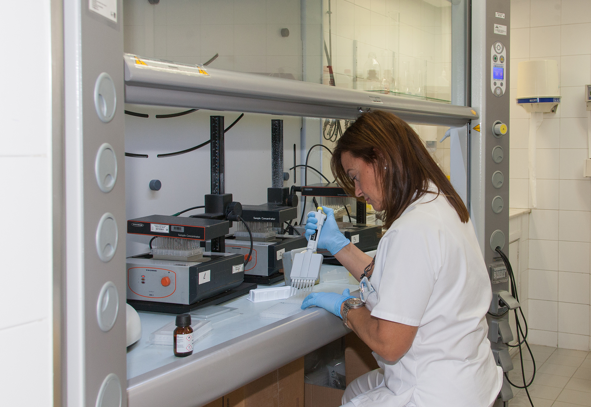
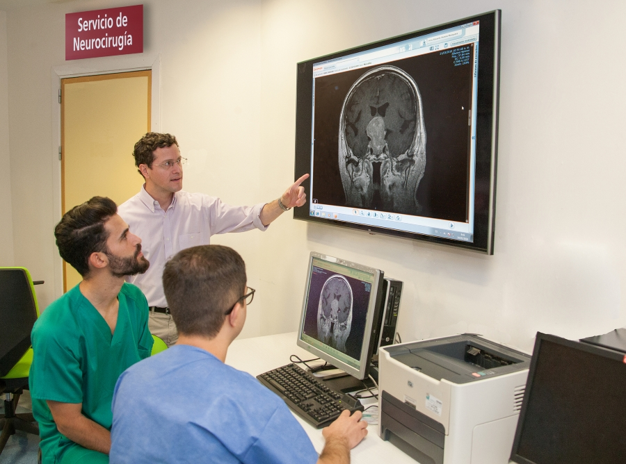

HOSPITAL UNIVERSITARIO VIRGEN DEL ROCÍO

DEBE HABER UN HOSPITAL EN CADA PUEBLO

ALERGOLOGÍA
La UGC adopta un modelo de centro integral, que incluye, dentro de la misma organización, la prevención, la asistencia, la investigación y formación especializada en Alergología. Abordaje integral de la enfermedad alérgica ofreciendo todos los servicios desde la prevención secundaria, pasando por el diagnóstico, y el tratamiento.

ANATOMÍA PATOLÓGICA
La Unidad de Anatomía Patológica se ocupa del estudio de biopsias (muestras de tejido), piezas quirúrgicas (resecciones) y citologías (extensiones celulares) en las que se espera encontrar ciertas lesiones. El estudio anatomopatológico está destinado a obtener un diagnóstico de dichas lesiones que confirme o revele la naturaleza de la enfermedad. Además, proporciona datos pronósticos (¿cómo es de agresiva la lesión?) y predictivos (¿a qué tratamientos puede responder la lesión?), que ayudan a otros médicos a tomar decisiones respecto al tratamiento más eficaz de la enfermedad. La herramienta diagnóstica básica es el microscopio óptico, pero la unidad también emplea otras tecnologías, como la inmunohistoquímica y las técnicas de patología molecular (análisis molecular aplicado a la anatomía patológica). Adicionalmente, la unidad está encargada de realizar las autopsias clínicas.

ANESTESIOLOGÍA Y REANIMACIÓN
Se conforma en dos Unidades funcionales, los Bloques quirúrgicos del Hospital General (BQHG) y el del Hospital Duque del Infantado (UCMA). La Unidad Funcional del BQHG, presenta una cartera de servicios de cirugía de alta complejidad, incluidas las áreas de urgencias y los programas de trasplantes de nuestro Hospital (Programa de donantes en sus distintas modalidades, programas de implantes renal, hepático, cardíaco y de corneas, etc). Por otro lado, también incorpora en su cartera de servicios la Unidad de Dolor Crónico, localizada en el centro de diagnóstico, Unidad de referencia para la provincia de Huelva, Osuna y Área de Gestión Sanitaria de Valme.

ANGIOLOGÍA Y CIRUGÍA VASCULAR
Su objetivo es la prevención, diagnóstico y tratamiento de las enfermedades de las arterias, venas y linfáticos, para ello contamos con unos profesionales que se esfuerzan en que estos objetivos se cumplan garantizando la excelencia en la asistencia sanitaria que presta. Centramos nuestra atención en protocolos y guías basadas en resultados médico-quirúrgicos sólidos, minimizando la variabilidad, realizando técnicas mínimamente invasivas y fomentando la investigación clínica, enfocada a una excelencia en nuestra práctica diaria asistencial.

APARATO DIGESTIVO
Esperamos que este espacio sea agradable y práctico a toda aquella persona que quiera conocernos, tanto en formato virtual a través de este espacio, como físicamente en el Hospital Universitario Virgen del Rocío (Consultas Externas Especializadas, Endoscopia Digestiva y Pruebas Funcionales en planta baja, y Planta de Hospitalización en cuarta planta Ala Norte), y en el Hospital Duques del Infantado (Consultas Externas Generales, primera planta).
CARDIOLOGÍA Y CIRUGÍA CARDIOVASCULAR
La tramitación del CSUR de cardiopatías congénitas del adulto, área multidisciplinar de la Cardiología, que permite ser centro de referencia nacional de pacientes con esta patología. En ella están implicados múltiples subespecialidades cardiológicas, como la Clínica, Cirugía, Hemodinámica, Imagen, Electrofisiología, etc., lo que confirma y da idea de la complejidad de la patología que se va a abarcar. Nuevas salas de Arritmias y Hemodinámica, Gestión de dispositivos implantables y asistencias ventriculares: incremento del seguimiento monitorización remota, Gestión dispositivos TAVI: Heart Team para pacientes externos a nuestro hospital, Creación del Hospital de Día de Arritmias, Hemodinámica e Insuficiencia Cardiaca, Escopia “0” en procedimientos de ablación.
CIRUGÍA ORAL Y MAXILOFACIAL
A lo largo del año, la UGC de Cirugía Oral y Maxilofacial ha finalizado el proceso de renovación de la acreditación en nivel avanzado por la Agencia de Calidad sanitaria de Andalucía, ACSA, y se ha creado la Unidad Funcional de Cabeza y Cuello compartiendo recursos y zonas de hospitalización con la UGC de Otorrinolaringología. Creación de un CSUR referente a nivel autonómico y nacional en Cirugía de los Fisurados en el Hospital Infantil, continuar líneas abiertas en la investigación del Cáncer de Cabeza y Cuello.
CIRUGÍA ORTOPÉDICA, TRAUMATOLOGÍA Y REUMATOLOGÍA
La Traumatología y Cirugía Ortopédica. Especialidad médica que incluye la valoración clínica, el diagnóstico, la prevención y el tratamiento por medios quirúrgicos y no quirúrgicos, del paciente portador de enfermedades congénitas y adquiridas, de deformidades y de alteraciones funcionales traumáticas y no traumáticas del aparato locomotor y sus estructuras asociadas. La Reumatología. Especialidad médica que incluye el estudio, diagnóstico y tratamiento de las enfermedades del aparato locomotor o musculoesquelético y las enfermedades del tejido conectivo.

CIRUGÍA PEDIÁTRICA
La sección de Digestivo se encarga de la patología quirúrgica del tracto digestivo y coloproctología, además de un Laboratorio de Pruebas Funcionales Digestivas referente en Andalucía. La sección de Vía Aérea y Cirugía Torácica es referente en España por su manejo de pacientes con patología compleja laringotraqueal en toda la edad pediátrica. La sección de Cirugía Oncológica Pediátrica es referente para tumores renales del Grupo Español de Tumores Renales de la Sociedad Española de Hematología y Oncología Pediátrica y participante en los CSUR de Neuroblastomas y Sarcomas. La sección de Urología Infantil, se encarga de la patología urológica quirúrgica, participando, entre otras cosas, en diferentes proyectos a nivel andaluz como el trasplante renal infantil y el manejo de pacientes con patología vesical compleja. Además se encarga de los estudios urodinámicos, contando con un nuevo equipo y ubicación del mismo.

UNIDAD CUIDADOS INTENSIVOS (UCI)
Esta UGC centra su oferta de servicios en la monitorización activa y tratamiento intensivo de los siguientes grupos de pacientes con riesgo vital o potencial: Coronarios, Sépticos, Postquirurgicos, Pacientes médicos, Grandes Quemados, Neurotraumatizados, incluyendo lesionados medulares, Politraumatismos de cualquier causa externa, Trasplantados, Ataques cerebrovasculares.
DERMATOLOGÍA
La Unidad de Gestión Clínica de Dermatología se ha consolidado durante el año 2017 como un referente en la oncología cutánea, con la incorporación de la microscopía confocal exvivo de tumores cutáneos, la integración de la unidad de linfomas cutáneos al Grupo Español de Linfomas Cutáneos y el acceso casi completo de la población de referencia a la teledermatología; así como en la dermatología pediátrica y malformaciones vasculares y psoriasis.

ENDOCRINOLOGÍA Y NUTRICIÓN
Centramos nuestra atención en protocolos y guías basadas en resultados en salud, impulsando la educación terapéutica, minimizando la variabilidad, realizando técnicas mínimamente invasivas y fomentando la investigación clínica, enfocada en la mejora continua (a una excelencia) en nuestra práctica diaria asistencial.
ENFERMEDADES INFECCIOSAS, MICROBIOLOGÍA Y PARASITOLOGÍA
En las últimas décadas han aparecido, de manera consecutiva, nuevos tipos de pacientes, nuevos “huéspedes”: los pacientes con infección por el VIH, los receptores de trasplantes de órganos y de progenitores hematopoyéticos, los pacientes con inmunodeficiencias primarias, los inmigrantes y los viajeros, los pacientes con cáncer en tratamiento con las nuevas terapias inmunomoduladoras, y los pacientes con enfermedades autoinmunes que reciben tratamientos biológicos, que añaden a las infecciones producidas por los patógenos convencionales, las producidas por los microorganismos oportunistas. Y por último se han ampliado los escenarios epidemiológicos clásicos, hospital y comunidad como lugares para la adquisición de infecciones, a las infecciones relacionadas con la asistencia sanitaria y las infecciones en los centros sociosanitarios.
GINECOLOGÍA Y PATOLOGÍA MAMARIA
Aparte de la patología benigna mamaria, la unidad resuelve en torno a quinientos casos de cáncer de mama al año y más de doscientos ginecológicos. Tanto en el diagnóstico como en el tratamiento y seguimiento de las pacientes, procuramos proporcionar el mejor tratamiento posible, con la mayor calidad de vida empleando cirugía mínimamente invasiva (endoscópica, robótica) siempre que nos resulta posible. Llevamos a cabo consultas de prevención del cáncer heredofamiliar, suelo pélvico, patología oncológica, masas anexiales, somos unidad de referencia en tratamiento de endometriosis y muchas otras actividades que se describen en nuestra cartera de servicios.

HEMATOLOGÍA
La hematología es la especialidad médica (rama de la medicina interna) que se dedica al tratamiento de los pacientes con enfermedades de la sangre o hematológicas, su campo de actuación es el diagnóstico, tratamiento, estudio e investigación de la sangre y los órganos hematopoyéticos (médula ósea, ganglios linfáticos y bazo) tanto sanos como enfermos.

LABORATIOS
La UGC de laboratorios clínicos está ubicada en el edificio de laboratorios del complejo hospitalario HUVR. Está integrada por el Servicio de Bioquímica Clínica y el Servicio de Inmunología. El Servicio de Bioquímica Clínica cuenta con 8 secciones, 14 facultativos y 95 TEL. El Servicio de Inmunología cuenta con 4 secciones, 6 facultativos y 17 TEL.
MEDICINA FÍSICA Y REHABILITACIÓN
Esta Unidad tiene como misión la atención a las personas con discapacidad leve, moderada o severa, reversible o irreversible ligada a una de las tareas fundamentales del Hospital de Rehabilitación y Traumatología, la atención a los traumatismos graves y sus secuelas.
MEDICINA MATERNOFETAL, GENÉTICA Y REPRODUCCIÓN
El desarrollo del Programa de Medicina y Terapia Fetal ha ido evolucionando hacia un modelo que hoy incluye el consejo genético pre y posnatal, el diagnóstico prenatal, la medicina, la terapia y la cirugía fetal. Nuestro grupo ha desarrollado procedimientos de terapia fetal de alta complejidad avalando la experiencia profesional con ponencias y publicaciones nacionales e internacionales en diagnóstico prenatal, medicina, terapia y cirugía fetal. En 2017 se produjo el nacimiento tras PGD-HLA del tercer bebé libre de enfermedad hereditaria y compatible para trasplante de progenitores hematopoyéticos a su hermano enfermo.
MEDICINA NUCLEAR
En nuestro hospital el uso de forma rutinaria de la biopsia selectiva de ganglio centinela para los tumores de cabeza y cuello y la administración de la primera dosis de un nuevo radiofármaco terapéutico (Lutecio) para el tratamiento de los tumores neuroendocrinos. También en esta línea, podemos señalar que se ha terminado de implementar la posibilidad de alternativa de otro tipo de estrés farmacológico (uso de regadenosón) en los estudios de perfusión miocárdica para los pacientes que hasta ahora lo tenían contraindicado, ha comenzado el uso de la gammagrafía cardíaca para la detección de amiloidosis y la participación en los primeros ensayos de nuevos radiotrazadores de neurodegeneración (amiloide, tau). El tomógrafo PET de nuestro Hospital, renovó su acreditación EARL, mayor reconocimiento europeo para la participación en estudios internacionales.
NEUMOLOGÍA Y CIRUGÍA TORÁCICA
El objetivo estratégico es la potenciación de unidades Multidisciplinares e Interniveles como la Unidad de Fibrosis Quística, de Esclerosis Lateral Amiotrófica, ELA y, de reciente creación, la de Hipertensión Pulmonar. El objetivo que nos planteamos hace años de consolidar la investigación, formando jóvenes investigadores, se ha ido concretando en dos laboratorios en el Instituto de Biomedicina de Sevilla, IBiS, el aumento de proyectos y el Factor Impacto. Un hito importante en 2017 ha sido la participación activa del personal de enfermería de la UGC en diversos Congresos Nacionales e Internacionales, relacionados con la Patología Respiratoria y Cirugía de Tórax en áreas como Rehabilitación, Fisioterapia y pruebas funcionales.
NEUROCIRUGÍA
Se ha consolidado la atención a los pacientes con patología oncológica de Sistema Nervioso Central tanto de nuestro centro como aquellos de los que somos referentes mediante comités de indicación y evaluación semanal. La incorporación de un nuevo microscopio operatorio con la opción de Fluorescencia Intraoperatoria, nos permite dirigir la intervención quirúrgica a una mayor amplitud en las resecciones tumorales de procesos de alto grado de malignidad con mayor seguridad. Somos CSUR de Patología Hipotálamo Hiposfisaria Compleja de manera conjunta con la UGC de Endocrinología, consolidanado el abordaje a los tumores de la base craneal anterior por vía transnasal expandida endoscópica. Igualmente formamos parte del CSUR de Patología Neurológica que cursa con Trastornos del Movimiento, conjuntamente con el Servicio de Neurología, con intervenciones de Estimulación Cerebral Profunda. Estamos pendientes de formalizar CSUR se patología Neuroquirúrgica Infantil, así como CSUR Neuromodulación del Dolor.
OFTALMOLOGÍA
Esta unidad tiene la cirugía de catarata, gracias a los planes de choque, y hemos incorporado técnicas de microincisión y lentes de nueva generación, destacando las lentes tóricas que se implantan en pacientes seleccionados y que producen una mejora de la calidad de vida de los mismo así como una disminución de la dependencia de gafas. Además, recientemente hemos incorporado el láser de femtosegundo para cirugía de catarata y cirugía corneal. En este ámbito hay que destacar el uso de este instrumento en la cirugía del queratocono que permite una mayor precisión en el implante de anillos corneales. Para el tratamiento del queratocono también hemos incorporado el cross-linking. En la cirugía de glaucoma hemos incorporado las técnicas de cirugía mínimamente invasiva (MIGS), que permiten un abordaje precoz y menos agresivo, así como una rápida recuperación visual.

ONCOLOGÍA, RADIOTERÁPICA Y RADIOFÍSICA
En la participación de Comités de Tumores especializados, con la colaboración de cirujanos, radiólogos, neumólogos, ginecólogos, digestivos, dermatólogos, otorrinos, etc. para poder garantizar el manejo óptimo de estos pacientes. En el tratamiento de la enfermedad, con profesionales actualizados y con las terapias más innovadoras y recientemente implantadas. Siendo referente de Tumores musculo-esqueléticos, Infantiles y Germinales, atendiendo pacientes del ámbito regional y nacional. La Unidad incorporó un equipo de Tomoterapia que ha supuesto una gran ayuda y renovación en los tratamientos radioterápicos. También se renovÓ otros dos aceleradores con sus correspondientes obras de adecuación finalizadas durante este periodo, contemplándose su apertura en este año de uno de ellos. Así mismo, trabaja con el equipo directivo un gran proyecto de nuevo hospital de día y consultas de Oncología Médica y Hematología, y consiguiendo durante este año una nueva organización de circuitos para los pacientes como de citas y atención al público. Un nuevo servicio de Radiofísica Hospitalaria se ha incorporado a la unidad la consulta de accesos venosos que proporciona asistencia a todas las especialidades hospitalarias que precisen de este servicio, disponible de lunes a viernes en horario de mañana.
OTORRINOLARINGOLOGÍA
La Unidad de Gestión Clínica de Otorrinolaringología (ORL) tiene como misión ofrecer la cobertura en la provisión de la Asistencia Sanitaria Especializada en el campo de la patología auditiva, nasosinusal, faríngea, laríngea y cervical de la población asignada de referencia, en un marco de Servicio Público, asegurando la calidad científico-técnica, la satisfacción del ciudadano que es el centro del sistema y el aprovechamiento óptimo de los recursos.Entre sus secciones se cuentan la ORL Pediátrica, la Otología, la Rinología, la Cirugía de Cabeza y Cuello y la Cirugía de Base de Cráneo, siendo líder en las dos últimas. Sus principales líneas de investigación en la actualidad son la Investigación en resultados en Cirugía Oncológica de Cabeza y Cuello, la aplicación de la Dinámica de Fluidos computacional a la Cirugía Nasal.
PEDIATRÍA Y ÁREAS ESPECÍFICAS
Somos un centro de referencia regional para gran parte de la patología pediátrica compleja. Tenemos reconocidos 7 CSURs (Centros, servicios y unidades de referencia CSUR). Sistema Nacional de Salud: Enfermedad renal infantil grave y tratamiento con hemodiálisis, Trasplante renal, Rama pediátrica del Trasplante renal Cruzado, Neuroblastomas, Sarcomas en la Infancia, Trastornos del movimiento, Enfermedades Raras Metabólicas. Además del nivel científico y tecnológico queremos estar AL LADO de nuestro pacientes y familiares para hacer la estancia en el hospital lo más llevadera posible, intentando que tanto las visitas al hospital como los días de hospitalización se reduzcan en lo posible. La Unidad de Gestión presta asistencia (Unidades Funcionales Pediátricas): Cardiología Pediátrica, Cuidados Paliativos Pediátricos, Dismorfología, Endocrinología Pediátrica, Enfermedades metabólicas, Fibrosis quística, Gastroenterología y Nutrición Pediátrica, Infectología Pediátrica, Inmunología Pediátrica, Hemodinámica Pediátrica, Nefrología Pediátrica, Neumología y Alergia Pediátrica, Neuropediatría, Oncología Pediátrica, Pediatría General, Pediatría Social, Reumatología Pediátrica.
RADIODIAGNÓSTICO
Dispone de recursos en los distintos edificios que componen la ciudad hospitalaria y en los centros periféricos, entre los que se encuentran los equipos de radiología convencional, telemandos, ecógrafos, TAC, mamógrafos, resonancias, equipo de estereotaxia, ortopantomógrafos y equipos de radiología vascular e intervencionista. Se encuentra organizada en áreas específicas del conocimiento, por “órganos-sistemas”, lo que permite una especialización de los radiólogos y favorece la comunicación y coordinación con las distintas especialidades.
SALUD MENTAL
Hemos realizado la adaptación local del III Plan integral de Salud Mental de Andalucía (PISMA III) persiguiendo los siguientes objetivos:
PROMOVER LA IGUALDAD Y EL RESPETO A LOS DERECHOS DE LAS PERSONAS.
Promocionar la salud y el bienestar emocional de la población en las distintas etapas del ciclo vital. Prevenir los problemas de salud mental,
prestando una atención especial a los colectivos de personas en situación de riesgo. Favorecer la detección precoz de problemas de salud mental
en la población infantil y adolescente y prestar una atención de calidad, que facilite su desarrollo evolutivo y la construcción de su proyecto
vital. Favorecer la detección precoz de problemas de salud mental en la población adulta y prestar una atención de calidad, que facilite la
recuperación de su proyecto vital. Prestar una atención de calidad a colectivos de personas adultas en situación de vulnerabilidad o desventaja
social, mejorando la accesibilidad y la adecuación de las prestaciones a sus necesidades. Asegurar la participación efectiva de la ciudadanía y
sus organizaciones en el cuidado de la salud mental. Dotar de los recursos de soporte, materiales, humanos y organizativos, necesarios para
alcanzar los objetivos del Plan. Mejorar la calidad de la atención a la salud mental en el Sistema Sanitario Público de Andalucía mediante la
excelencia profesional, la práctica clínica basada en la evidencia, la investigación orientada a la evaluación de intervenciones y la búsqueda
de innovaciones para dar respuesta a los problemas de salud mental de la población. Por tercera vez consecutiva la Psiquiatría del Hospital
Virgen del Rocío ha sido reconocida como la segunda mejor especialidad de nuestro país por el Instituto Coordenadas de Gobernanza y Economía
Aplicada en el Índice de Excelencia Hospitalaria 2017 publicado el 2 de enero 2018.
URGENCIAS
La Unidad de Urgencias complementa la enorme y compleja actividad de nuestro Hospital, para crecer cada día más en nuevos proyectos de acción sanitaria hacia la población, como trasplantes, tratamientos de última generación y centro de referencia nacional para muchas patologías. Somos una Unidad de Gestión autónoma, integrada en el Sistema Sanitario Público Andaluz y en nuestro Hospital y referencia de la población para la atención urgente y permanente.
URGENCIAS PEDRIÁTICAS
Dotación de la Unidad de nuevo material de electromedicina: monitores fijos, respirador de transporte, EKG y tensiómetros
de última generación. Digitalización completa Urgencias y Observación Pediátrica (desarrollo completo Diraya Urgencias,
petición electrónica de Laboratorio y Radiología). Distintivo del dolor perioperatorio. Desarrollo de la sedonalgesia
para procedimientos en la Unidad con dotación de material de electromedicina, reestructurando la sala de procedimientos
y realizando acuerdos entre Cirugía Pediátrica, Traumatología, Cirugía Oromáxilofacial y Plástica y Reparadora para la
realización de estos procesos. Realización Código Ictus en Pediatría.
Desarrollo Point of Care en Urgencias pediátricas: ecografía, test microbiológicos y bioquímica. Triaje centro de las
Urgencias pediátricas. Incorporación Sistema Español de Triaje (SET). Investigación de biomarcadores en el traumatismo
cráneo-encefálico leve y moderado en pacientes pediátricos. Desarrollo consulta alta resolución y telemedicina en
Urgencias Pediátricas. Hospital amigo, Centro sin dolor y Hospital seguro. Desarrollo página Web del Servicio.
UROLOGÍA Y NEFROLOGÍA
La Unidad de Gestión Clínica de Urología y Nefrología posee como campo de acción para la asistencia, docencia e investigación todo lo concerniente al aparato genitourinario (anatomía, fisiología, patología, diagnóstico, prevención, tratamiento y seguimiento), tanto desde el punto de vista médico como quirúrgico.